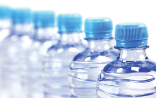

Module 4—Properties of Solutions
 Explore
Explore
 Discuss
Discuss

© Clint Scholz/shutterstock
Companies that sell bottled water generate millions of dollars in profit. Bottled-water consumption is growing every year.
In your course folder, write about your thoughts on the following topics related to bottled water:
- Do you drink bottled water on a regular basis? Why or why not?
- In your opinion, do you feel bottled water is safer than tap water? Give reasons or examples to back up your opinion.
-
Some religious and human rights organizations have expressed concern about the “privatization” of water and feel it is unethical to repackage a basic necessity of life for profit. Opponents to this objection often refer to the fact that food and shelter are just as vital, and since those items are sold as commodities, why not water too? What is your opinion about selling water?
Share your answers with your classmates or some other people.
 Read
Read
Matter is a very general term that refers to anything that has mass and occupies space. Scientists subdivide matter into two broad categories: pure substances and mixtures.
A pure substance consists of one chemical only and may be subcategorized as either an element or a compound.
A mixture consists of two or more substances and may be subcategorized as either homogeneous or heterogeneous.
A homogeneous mixture may appear to contain only one substance with uniform properties, but in reality it may contain several different substances. A solution is a type of homogeneous mixture composed of at least one solute and one solvent. Can you think of any other examples of homogeneous mixtures?
A heterogeneous mixture visibly contains two or more different components. A chocolate chip cookie is a heterogeneous mixture since the chocolate chips can be seen as being separate from the rest of the cookie.
For more information on the different forms of matter, read “Classifying Matter” on pages 12 and 13 of your textbook.
For more information on methods used to isolate the different components of matter in a mixture, read “Crystallization” and “Filtration” on pages 802 and 803 in your textbook.